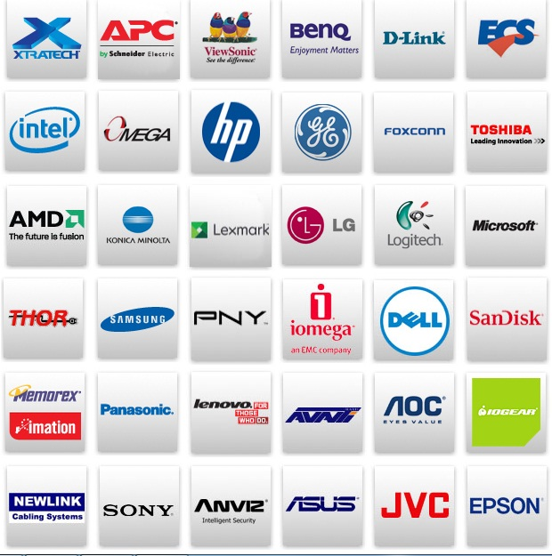

PROFILE CSI "COMPU TECHNOLOGY"
CSI "COMPU TECHNOLOGY es una empresa tecnológica fundada en 1996, y desde entonces sigue siendo reconocida en el mercado ecuatoriano por su constante propuesta innovadora, ofreciendo la vanguardia y la calidad con flexibilidad de precios y créditos; constituyéndose en el líder indiscutible de la comercialización tecnológica con la mayor cobertura en todo el Ecuador.
Nuestro enfoque de negocios como grupo empresarial con visión social, está dedicado a cubrir toda la red de distribución de hardware, partes, piezas y componentes de computación y electrónica.
CSI "COMPU TECHNOLOGY cuenta con sus centros principales de atención y logística en las ciudades de Guayaquil y Quito, permitiendo gestionar negocios efectivos con sus clientes, bajo el concepto de sistema de atención descentralizado en el país.
Miles de metros cuadrados hoy día; y, creciendo más para áreas de bodega y tránsito, unido a un eficiente sistema de transportación privada otorga una eficaz y oportuna entrega a nivel nacional.
El entorno tecnológico del Grupo CCSI "COMPU TECHNOLOGY está integrado por varias empresas, instalaciones como ITTEK CORP (empresa americana, ubicada en Miami, USA), encargada de las operaciones de compras y negociaciones con proveedores internacionales.
Nuestro compromiso de servicio de garantía lo realiza SERVITECH, otorgándoselos a todos los productos comercializados por CSI "COMPU TECHNOLOGY. Intellicom, el componente comercial más tradicional del Grupo CSI "COMPU TECHNOLOGY sigue enfocando sus metas en la atención corporativa.
CSI "COMPU TECHNOLOGY mantiene una solidez certificada formalmente por empresas como Ecuability, calificadora de riesgo, que confirió al Grupo CSI "COMPU TECHNOLOGY tiene una calificación de AA+ Fue necesario juntar muchas fuerzas comerciales: productos de última generación, personal capacitado , formar un canal sólido de clientes y amigos lograr la distribución nacional de las mejores marcas mundiales , de las cueles comercializamos las siguientes:
